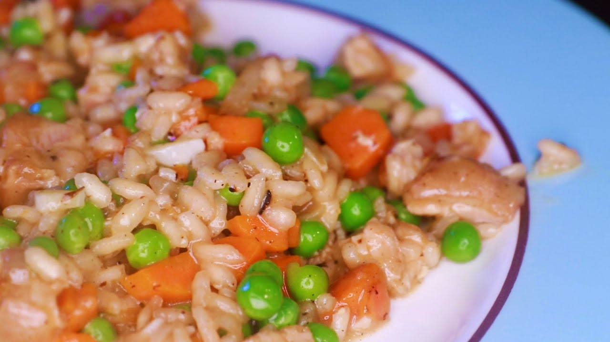

Chicken Risotto

Description
Risotto is a northern Italian rice dish cooked with broth until it reaches a creamy consistency. The broth can be derived from meat, fish, or vegetables.
Many types of risotto contain butter, onion, white wine, and parmesan cheese. It is one of the most common ways of cooking rice in Italy. Saffron was originally used for flavour and its signature yellow colour.
Risotto in Italy is normally a first course served before the main course, but risotto alla milanese is often served with ossobuco alla milanese as a main course.
This risotto recipe is made with chicken specifically.
Ingredients
- olive oil
- 2 small shallots
- 2 small carrots
- half cup risotto rice
- half cup white wine
- 2-3 cups chicken stock
- dried sage
- dried thyme
- salt
- pepper
- 2-3 cloves of garlic
- half cup of frozen peas
- butter
- parmesan/pecorino cheese
Instructions
- Get a wide pan and coat pan with olive oil while setting to medium-high heat
- When pan is heated brown chicken thigh on both sides. While the chicken is cooking
,cut shallots and carrots into small pieces.
- When chicken is finished browning, remove from pan and dump carrots and shallots in.
Cook vegetables until some are brown and is getting towards burning.
- Pour in rice, stir, and let sit until bottom layer of rice is browned and produces nutty smell.
- Deglaze using white wine such that wine covers rice. When wine has reduced substantially, pour in enough stock
such that it generously covers the rice. Add bay leaf, sage, thyme, and pepper to stock and rice mixture.
- Cut chicken thighs into bite sized pieces and add back to pan. Simmer until stock has been mostly absorbed. While simmering,
peel and cut garlic.
- Continue to add small amounts of stock and stir until rice tastes close to done, but with some crunch left.
Turn off heat and melt in butter and cheese to taste, mix in peas, garlic, and another splash of white wine.
Test for seasoning.
Back to homepage